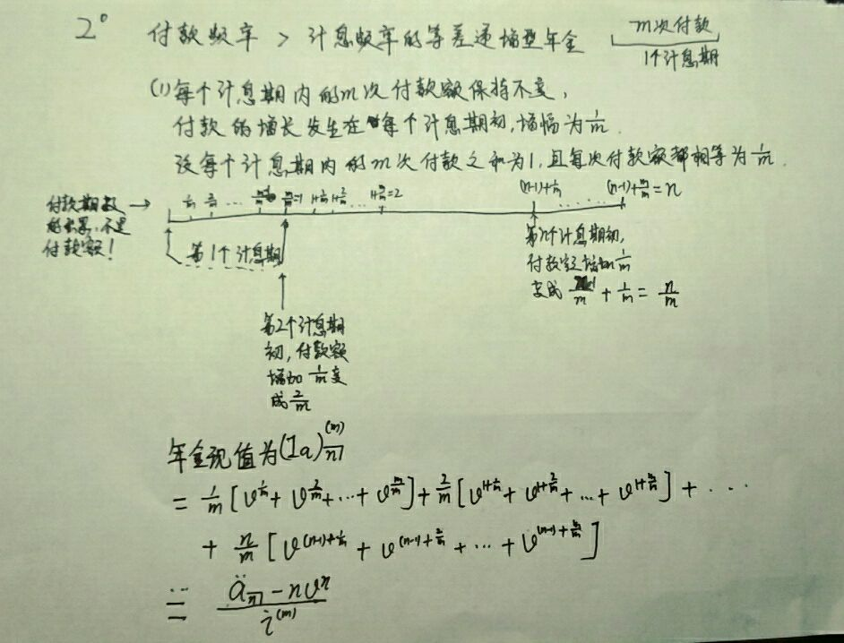

标准型年金
在此之前，先来谈一下关于折现到零时刻和积累到某（n）时刻的意思.
以期末付年金为例：
所谓零时刻，就是第一期的开始时刻，即1期初
所谓积累到某时刻，就是说某（n）时刻末尾，也就是第(n+1)期初.
以期末付标准型年金为例，如下图所示：
另外，期初付年金核算公式推导如下
一般型年金
变利率年金
１. 各付款期间段的利率不同，就是说在每个期间段都按照该期间段的利率来核算，所以年金现值为$a_{n┒}=(1+i_1)^{-1}+(1+i_1)^{-1}(1+i_2)^{-1}+…+(1+i_1)^{-1}(1+i_2)^{-1}…(1+i_n)^{-1}=\sum_{t=1}^n\prod_{s=1}^{t}(1+i_s)^{-1}$
年金积累值为$s_n┒=1+(1+i_n)+(1+i_n)(1+i_{n-1})+…+(1+i_n)…(1+i_2)=\sum_{t=1}^{n}\prod_{s=0}^{t-1}(1+i_{n-s+1})$,令$i_{n+1}=0$ .
２. 各次付款所依据的利率不同，就是说利率是按照每次付款来计算的，当把某一次付款折现到０时刻或者积累到某时刻时，利率都是按照该次付款的利率，而不是随着付款的期间而变动，这样子，年金现值为$a_{n┒}=(1+i_1)^{-1}+(1+i_2)^{-2}+…+(1+i_n)^{-n}=\sum_{t=1}^{n}(1+i_t)^{-t}$，积累值为$s_{n┒}=(1+i_1)^{n-1}+(1+i_2)^{n-2}+…+(1+i_n)+1=\sum_{t=1}^{n}(1+i_t)^{n-t}$

付款频率与计息频率不同的年金
连续年金
连续年金，即付款频率无限大的年金，是付款频率大于计息频率的特例,就是在一个计息期内无限次付款
基本变化年金
更一般变化年金


连续变化年金